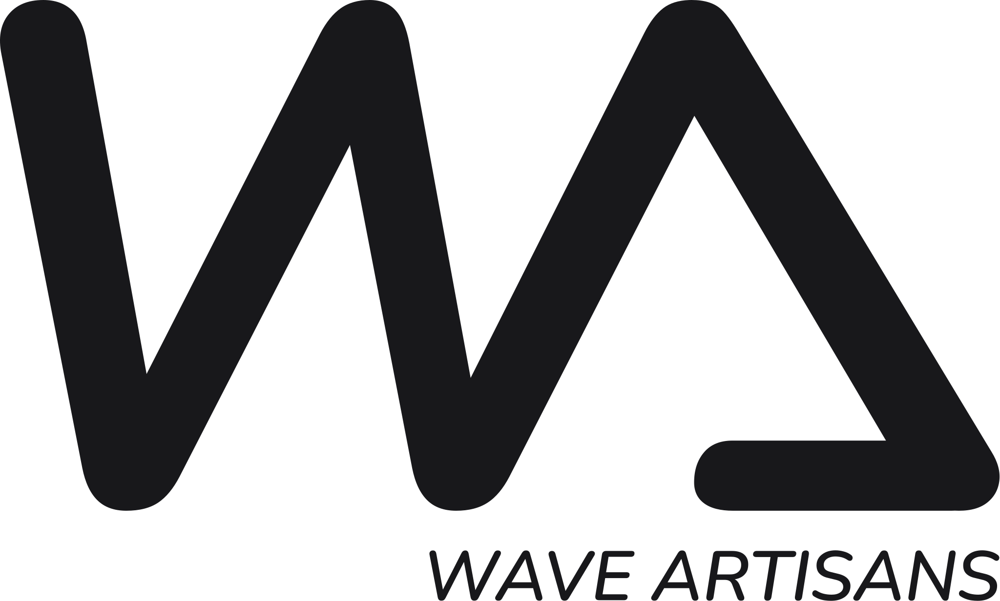

Display · 48px / 1.1
Craft expressive surfaces
Use for hero lines and spotlight metrics.

Wave Artisans UI
Airy spacing, monochromatic zinc hues, and soft twin shadows keep the interface calm. This page outlines the essential patterns that make the system feel cohesive.
Display · 48px / 1.1
Craft expressive surfaces
Use for hero lines and spotlight metrics.
Heading · 28px / 1.3
Section titles hold 24px padding.
Reserve for secondary page headings.
Body · 16px / 1.6
Soft contrast is balanced with ample line height. Default paragraphs use text-zinc-600 for legibility.
Label · 12px / 0.2em tracking
Component labels & toggles
Keep short, in all caps, with 0.3em letter spacing.
Lists · 16px body
space-y-2 between bullets.Numbered · sequences
Use pl-6 to clear the numeral.
Checklists · task states
Swap the glyph to indicate pending vs. complete.
Quote · 18px / italic
"We trade harsh chrome for softened planes so the interface feels crafted." – Editorial Note
Tailwind core colors · OKLCH friendly
Main accents
Teal
energy · teal 300 / 600
Rose
glow · rose 300 / 600
Amber
warmth · amber 300 / 600
Semantic signals
Waves pumping
rose 300 / 600
Jam & Sync
orange 300 / 600
Quick Ops
yellow 300 / 600
Deep Field
green 300 / 600
Recharge
teal 300 / 600
Curiosity Queue
fuchsia 300 / 600
Done & Dusted
zinc 400 / 600
Status chips and inline banners
Badges
Alert banners
12-column grid
Fluid container
Use max-w-6xl and responsive column spans for balanced breathing room.
Spacing scale
4, 8, 16, 24, 32
xs · 0.5rem
sm · 1rem
md · 1.5rem
lg · 2rem
Stack cards with space-y-6 or larger to maintain the calm tone.
Breakpoints
sm · md · lg · xl
Scale to 2-column layouts at md and stack for smaller screens.
Raised · Flat · Embossed
Raised
Default interaction panel
Use shadow-wave-well to keep buttons and sliders floating on the base slab.
Flat
Subtle dividers
Ideal for long-form content and tables—switch shadows for a 1px border to reduce emphasis.
Embossed
Input wells & key stats
Apply shadow-wave-embossed when the surface should look carved in, such as meters or inset cards.
Flat · subtle
Usage
Dividers keep sections readable without sacrificing whitespace. Mirror the flat card border with border-zinc-300/60 on a single-pixel line that spans the container.
Buttons, toggles, and gauges inherit the shared background color, while shadows create elevation and pressed states.
Wave Artisans Console
Buttons
States & variantsIcon-first controls keep the block radius, while single-line actions stretch into pill silhouettes for a softer flow.
Resting
Shadow offset 12px
Hover
Raise 2px, deepen blur
Pressed
Switch to inset twin shadow
Input & toggles
Minimal chromeNeutral
Shadow pair 94° / 274°
Elevated
Increase blur by 4px
Inset
Flip to inset for pressed
Minimal grid, ample whitespace
Raised data view
Wave log
| Preset | Depth | Tempo | Status |
|---|---|---|---|
| Glass currents | 12px | 72 bpm | Idle |
| Mist bloom | 18px | 96 bpm | Active |
| Orchid tide | 10px | 64 bpm | Idle |
Padding
px-8 · py-4
Rows
border-zinc-300/60
Header
uppercase, tracking 0.25em
Flat & raised, labeled or bare
Buttons group, sonner, spinner, skeleton, menus, scroll area
Buttons group
Segmented actions
Sonner
Toast notification
Profile saved
Synced to Wave Cloud 2 seconds ago.
Anchor to top-right, auto-dismiss after 4s.
Spinner & skeleton
Loading indicators
Menus
Minimal flyout
Scroll area
Soft rails
Layer 01 · Mist bloom · synced
Layer 02 · Coral hush · synced
Layer 03 · Quartz arc · syncing
Layer 04 · Sun drift · queued
Layer 05 · Night reef · synced
Layer 06 · Foam hush · synced
Layer 07 · Silver dune · synced
Layer 08 · Prism vent · syncing
Skeleton card
Flat placeholder
Embossed fields with gentle focus cues
Text inputs
Stacked fields
Dropdowns & states
Variant palette
Default input
input-embossed inset
Focus input
deepen inset
Raised select
shadow-wave-button